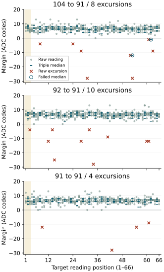

Returned results
The complete recognition criterion was not met. All 3888 readings were recovered, all six mixed calibrations were accepted, and acquisition diagnostics passed. Of 396 target medians, 394 were correct, one was assigned to state 1 instead of state 0, and one was rejected. All 36 predecessor medians were correct. There were no unavailable decisions.
The declared initial-excess comparison did not show a consistent upward departure after request 104. Its paired median difference was −0.5 ADC codes against each control. All 18 first target medians were correct. The two recognition failures occurred later in the 104 → 91 arm.
| Predecessor | Correct medians | Raw inside | Raw above |
|---|---|---|---|
| 104 | 130/132 | 388/396 | 8 |
| 92 | 132/132 | 386/396 | 10 |
| 91 | 132/132 | 392/396 | 4 |
| Total | 394/396 | 1166/1188 | 22 |
No raw target reading fell below its interval. Single-reading membership also failed. Correct median decisions included a zero-margin acceptance; the returned values do not justify enlarging the frozen intervals.
Initial response comparison
Each entry is the initial excess after 104 minus that after the indicated control in the same round. Initial excess is the first target triple median minus the median of the later 63 target readings. All twelve declared pairs were available.
| Round | 104 minus 92 | 104 minus 91 |
|---|---|---|
| 1 | −3 | −3 |
| 2 | −2 | −3 |
| 3 | 0 | 2 |
| 4 | 0 | −1 |
| 5 | 2 | 1 |
| 6 | −1 | 0 |
| Median | −0.5 | −0.5 |
Against 92, one difference was positive, two were zero and three were negative. Against 91, two were positive, one was zero and three were negative. This weakens the proposed consistent initial upward response after 104. It does not establish equivalence between predecessors or exclude an intermittent transition effect.
Later excursions and failed medians
In round 2, target readings 52–54 after 104 were [2832, 2848, 2817]. The median 2832 exceeded the state-0 upper bound of 2820 by 12 codes and lay within state 1's interval, 2825–2877. In round 3, readings 61–63 after 104 were [2824, 2816, 2832]. Their median 2824 exceeded the state-0 upper bound of 2823 by one code and fell in the rejection gap before state 1 began at 2828.
Both triples contain two out-of-band constituents. The first contains consecutive excursions; the second has an in-band reading between them. Across all arms there were twenty isolated excursions and one two-reading run. A three-reading median tolerates some isolated excursions, but these observations directly show its limit when two constituents lie outside the intended interval.


Post-acquisition observations: rounds 1–6 contained 6, 10, 6, 0, 0 and 0 raw excursions respectively, each out of 198 target readings. One excursion occurred among the 54 first-triple readings and 21 among the 1134 later readings. These different exposures do not support an initial concentration. No temperature or other cause of the round dependence is established.
The excursion codes were 2824 (six occurrences), 2832 (eleven) and 2848 (five). Code 2848 occurred after all three predecessors. In the recorded register octets, the high octet was 11 and the low octet was respectively 8, 16 or 32; both low/high reads agreed. These discrete code patterns motivate examining the acquisition path, but do not identify transport corruption, retained conversions or an analog disturbance.
Acquisition and evidence integrity
Two read-only 64 MiB captures matched exactly. The journal contains 32525 recorded sectors and 179 unused reservations, with no journal-integrity issues. All 3888 request/readback and ADC diagnostic records passed their checks, including agreement of both result-octet pairs. All timing records were ordered, and all 7776 endpoint frequency observations reported 54000000 Hz.
The recorded interval from trial entry to the final recording section was 1418.008 seconds, approximately 23 minutes 38 seconds. Summed acquisition-call intervals were 137.859 seconds; their median was 34.937 ms. The remaining interval includes journal recording and other work. These counters do not measure the external powered duration or establish absolute clock accuracy. The 26-minute procedure was prescribed; external duration and boot count were not independently measured.
All six block restorations, the final restoration and pin release reported success. Independent final voltage readback remains unproven. The partition table, primary and backup boot sectors, geometry and boot-file contents matched the preparation; both allocation tables agreed. Seven non-journal metadata sectors differed. The raw differences are preserved without repair; their writer and cause remain undetermined.
Interpretation and next investigation
The controlled predecessors did not reproduce the proposed consistent initial upward response. Both failed medians were late, and raw excursions occurred under every predecessor. One boot cannot establish whether the two failures after 104 reflect a predecessor effect or intermittent acquisition behavior.
The next investigation is result-read timing at fixed request 91. Compare the present transfer timing with a slower, explicitly configured transfer, retaining each result-octet pair, status and counter observation. A matched elapsed-time control is needed to distinguish transfer timing from extra time between observations. The present zero-added-wait path remains the reference. This proposal requires its own implementation checks and declared comparison before installation.
The purpose is to test whether the acquisition mechanism contributes to the discrete excursions before changing electrical-state widths or adding filtering. Matching repeated reads already constrain the explanation; neither fresh analog conversion nor the correctness of the underlying register value follows from that agreement. This return does not change the senary design or qualify general Seigsit creation.
Question and rationale
The fixed-request repeat recovered all 3888 readings but rejected one mixed-reference calibration. After six readings at request 104, the first reference triple at request 91 was [2848, 2848, 2817]. Its median, 2848, extended the state-0 interval into state 1. The other five rounds recognized all their target medians correctly.
This investigation asks whether acquisition at request 91 differs after request 104, the adjacent perturbed request 92, or a preceding request of 91 itself. The working hypothesis is a larger initial upward departure after 104. A comparable departure in the controls, later isolated excursions without an initial concentration, or consistently zero or negative paired contrasts would weaken that account. The earlier observation establishes the question, not its cause.
Raw excursions also occurred later during fixed requests in both preceding boots. The longer target sequence therefore retains later positions instead of examining only the first triple. No initial readings are discarded and no additional wait is introduced.
Acquisition protocol
One initial boot contains six rounds of 648 readings. Each round retains 216 nominal reference readings and 216 interleaved mixed-reference readings, followed by three controlled trajectories of 72 readings. Each trajectory contains six predecessor readings and 66 readings at request 91. The totals are 3888 readings, including 108 predecessor and 1188 target readings; native recognition records 36 predecessor medians and 396 target medians.
- 104 → 91: reproduce the six-reading predecessor preceding the observed high reference triple.
- 92 → 91: compare a nearby downward request change.
- 91 → 91: compare continued acquisition without a request change at the target boundary.
The predecessor orders by round are 104,92,91; 92,91,104; 91,104,92; 104,91,92; 92,104,91; and 91,92,104. Every permutation occurs once and each predecessor occupies each trajectory position twice. Each arm supplies six trajectories, 396 target readings and 132 target medians. The request before each six-reading prime is retained in the assessment.
Each reading reissues its requested value and uses the existing triggered ADC operation, including the existing 1 ms pre-ADC settling interval. Added wait remains zero. The request range, guard of two ADC codes, calibration rule, three-reading non-overlapping medians, operating configuration and raw journal extent remain unchanged. Request numbers and ADC codes here are decimal hardware values, not new numerical defaults for SEIGRASM.
Both calibrations are frozen before the controlled trajectories. An overlapping reference set remains rejected; all subsequent raw values are retained with recognition unavailable. Target values never alter a reference or recognition threshold.
Declared comparison
For each complete trajectory, compute the first target triple median minus the median of target readings 4–66. Compare this initial excess after 104 with the excess after each control in the same round. Retain all six paired differences for each control, their signs and their descriptive median. This comparison measures position-dependent response; the later median is not presumed to be the true voltage or a settled value.
Report all 22 native target-group decisions and every raw value by predecessor, round and position. Record raw interval membership, signed margins, consecutive excursion lengths, repeated adjacent codes and occurrences of the previously observed code 2848. These descriptive observations do not change native recognition. An isolated raw excursion and a two-reading excursion within one triple remain distinguishable.
Complete target recognition requires six accepted mixed calibrations, acquisition integrity and 396/396 correct target medians. Single-reading membership is a separate criterion requiring 1188/1188 target readings inside the frozen state-0 mixed interval. Neither criterion is assumed necessary for obtaining a useful transition comparison.
A rejected calibration makes 66 target medians and 198 target interval memberships unavailable for that round, without removing the recorded raw trajectories. Calibration-independent raw contrasts remain available if their predecessor and target acquisition diagnostics are complete. Missing readings or diagnostic failures make the affected primary trajectory contrast unavailable; all scheduled denominators remain explicit. Predecessor recognition is reported separately.
SEIGRASM execution and recording
Selector 5 adds 27 literal AArch64 words and redirects one dispatch branch. The operation contains 351 words. Existing reference acquisition, voltage request, ADC access, calibration, recognition, restoration and journal operations retain their execution paths. Configuration schema 19 identifies this protocol.
The existing boot loader enters the SEIGRASM payload. After entry, SEIGRASM performs direct PMIC bus transactions and records requests, readbacks, ADC status and result observations, counters, calibration records and decisions in its senary journal. PC packaging places literal instruction bytes and data; it does not provide target execution. PC assessment reconstructs the saved record and the declared comparisons.
Execution checks cover every request and coordinate, balanced orders, an injected initial high doublet, rejected-reference accounting, altered decisions, diagnostic failures, and partial journal recovery with restoration. Supplied responses validate code paths; physical observations are assessed separately below.
Interpretation limits
Order is balanced but deterministic. Reference age, temperature, prior activity and unmeasured component behavior remain possible influences. Six predecessor readings define the controlled preparation; they do not prove complete electrical settling. The requests are control codes and the results are ADC codes, not independently measured voltages.
Repeated result codes and ordered status observations do not independently identify fresh physical conversions. This experiment can locate a transition association, but cannot by itself separate analog response, conversion behavior or result retention. There is no trigger-omission arm in this protocol. The boot-firmware dependency remains; firmware replacement, native multilevel computation and Hyphos-made Seigsit creation are not demonstrated by this acquisition.
Run duration
One uninterrupted 26-minute powered session under the established SD workflow. The reading count and journal extent remain unchanged; the preceding run reached its final recording section after approximately 23 minutes 38 seconds. Returned counters will establish the duration of this run's recorded operations.
Preparation
Preparation 852EFA314F48 passed all 307 software checks without skips or source changes during validation; 115 validated source files are preserved. The image retains 33 instruction regions unchanged, the same boot configuration, electrical parameters and journal extent. Its scheduling operation changes one existing instruction and adds 27 words.
Installation verified all 4096 writes of 16 KiB and two matching complete 64 MiB readbacks. Media ejection succeeded. The pre-write backup matches the preserved preceding return exactly. The image contains 32704 empty journal reservations bound to its new identity. The returned record is assessed below; the preparation retains the frozen protocol.